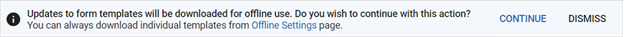
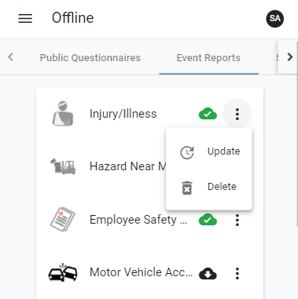

Before you go offline, you must ensure there are templates available for offline use. You can also select existing records to work on when you are offline.
The first time you log into myCority, or the first time you log in after clearing your cache, you will be presented with the following message:

If you click Continue, all form templates will be downloaded and available for offline use. If you click Dismiss, no form templates will be downloaded but you can still manually download individual form templates as described below.
If an administrator updates or changes one of your downloaded form templates, you will be prompted to re-download the form templates the next time you log into myCority.
Once you have auto-downloaded a template or taken a record offline, the number of available offline records will be displayed in the side menu.
To manually download templates so they are available offline, click Account at the bottom of the side menu and select Offline Settings.
Tabs display at the top of the screen to group different types of form templates that can be made available offline.
